Gasifier First-Stage Feed Mixer — Failure Data Analysis
Can the sensor data tell us why the mixer keeps failing?
A run-by-run analysis of 15 gasifier campaigns, testing whether any measurement separates the runs that ended in a cracked mixer tip from the runs that finished healthy.
Scope: 15 runs · 5 gasifiers · 38 aligned sensors · 1-minute data | Bottom line: no reliable warning signal exists in this data — and this report shows clearly why.
1 — The problem
What is breaking, and why it matters
The first-stage mixer is the burner that injects fuel slurry and oxygen into the gasifier and burns them at roughly 1,500 °C. Its tip is protected by a ceramic heat-shield and a cooling-water jacket.
The failure we are chasing is repeatable and expensive: the ceramic shield dislodges and the metal retaining nut cracks — sometimes after only a few weeks of running. Each failure forces a shutdown and a rebuild.
The question from operations
Is there a measurable pattern in the sensors — a temperature, a pressure, a flow — that behaves differently in the runs that failed, so we could see a failure coming?
2 — The data we used
Fifteen runs, eight of them failures
We used every run with a complete 1-minute sensor history: 15 campaigns across 5 gasifiers. Eight ended in a failed mixer; seven ran healthy. Each run is a multi-week campaign, so the honest unit of comparison is the run, not the individual minute.
15
full run-campaigns analysed
8
ended in a cracked / failed tip
7
finished healthy
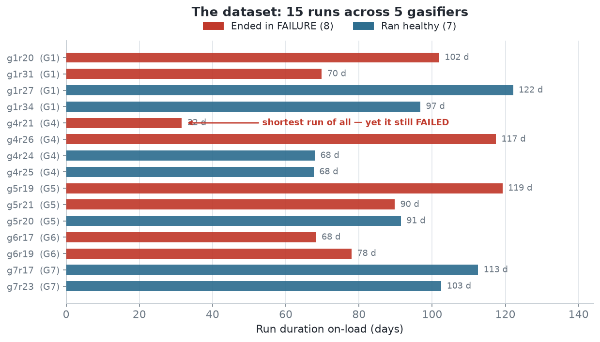
Figure 1.What this shows: Runs vary from 32 to 122 days. Failures (red) and healthy runs (blue) both appear at short and long durations — failure is not simply "ran too long." Note g4r21: the shortest run of all, yet it failed. Keep an eye on this run — it comes back.
3 — How we looked
Line up the failures against the healthy runs and hunt for a difference
From the equipment drawings we built a short list of physical suspects and turned each into a measurement:
Cooling: was the tip hotter or less-cooled in failures? (cooling-water return temperature & flow)
Imbalance: did the two halves of the mixer (side A vs side B) disagree?
Wear & atomisation: did the oxygen/fuel pressure drop drift as the nozzle eroded?
Fuel mix: was the oxygen-to-fuel ratio off?
Thermal shock: more trips, bigger temperature swings, jumpier running?
In total we distilled each run into 147 measurements and tested every one — then applied honesty checks, because with few runs and many measurements it is dangerously easy to find a "pattern" that is really just luck.
4 — What we found
Finding 1 — the best clue still doesn’t separate the two groups
Our single strongest measurement was how steady the oxygen-feed temperature was (failures were a little jumpier). On paper it scored well. But look at the actual runs:
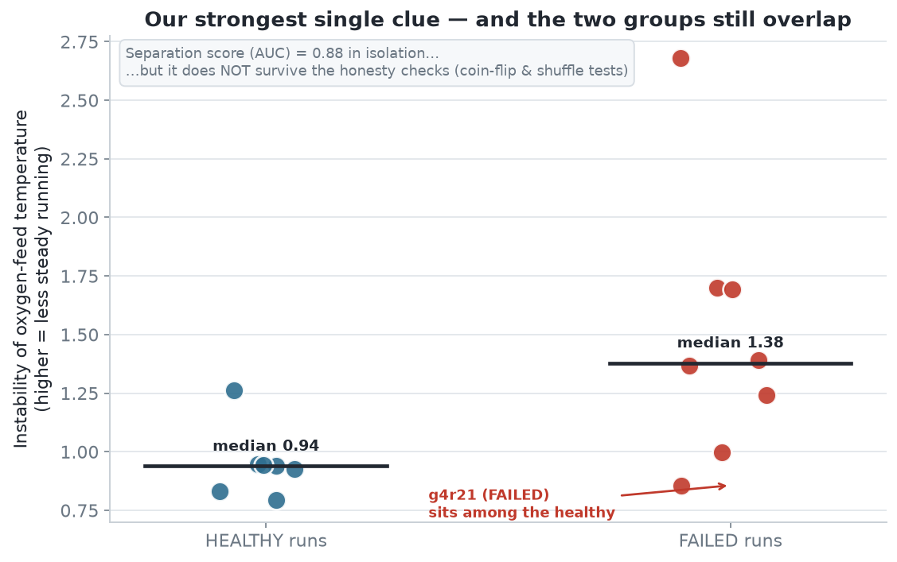
Figure 2.What this shows: The failed (red) and healthy (blue) clouds overlap heavily, and their averages sit only a hair apart. Several failures are calmer than several healthy runs. This was the best we found — and it still isn’t a clean line you could set an alarm on.
Finding 2 — failed runs were not running hotter
The intuitive theory is "the ones that overheated are the ones that broke." The data says no.
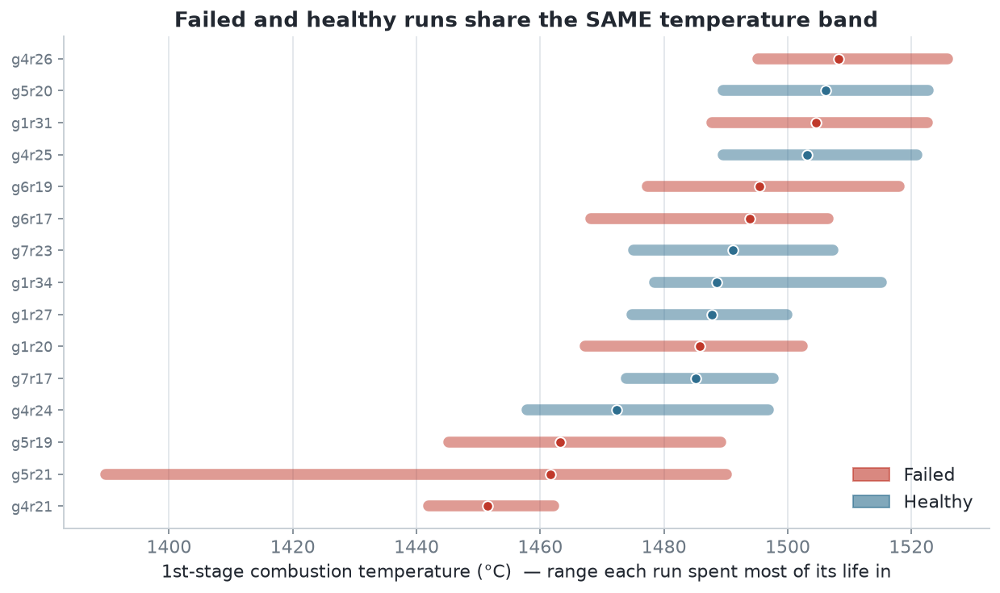
Figure 3.What this shows: Each bar is the temperature range a run lived in. Red (failed) and blue (healthy) bars are stacked in the same 1,450–1,520 °C band. The failed runs were not hotter.
Finding 3 — none of the physical suspects separates the two groups either
We checked every physical theory the same way. Not one of them tells failed and healthy runs apart.
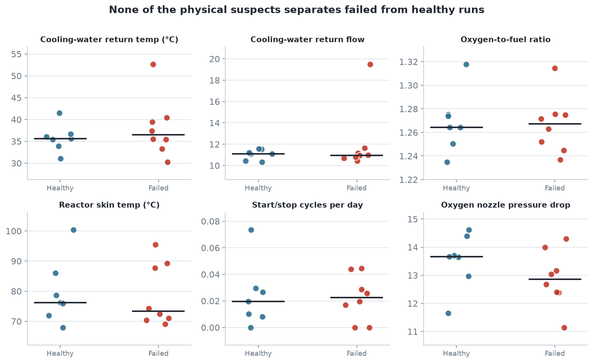
Figure 4.What this shows: Six of the leading suspects — cooling temperature, cooling flow, oxygen-to-fuel ratio, reactor skin temperature, start/stop cycling, and nozzle pressure drop. In every panel the failed and healthy groups sit on top of each other (the black bars are the two group averages — nearly identical everywhere).
Finding 4 — the full picture: every sensor, split by machine, tells the same story
To leave no doubt, we plotted the full shape of each sensor for every run — red curves are failed runs, blue are healthy — laid out machine by machine (G1, G4, G5, the three machines that have both failures and healthy runs). If a sensor mattered, the red curves would sit apart from the blue ones. They don’t: within each machine the colours weave through each other.
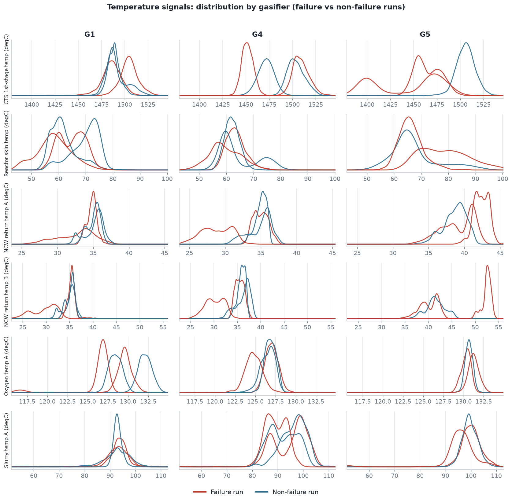
Figure 5.What this shows: All the temperature signals. Read each small panel as "where did this sensor spend its time." Red (failed) and blue (healthy) curves overlap and interleave in every machine — no sensor cleanly shifts one way for failures.
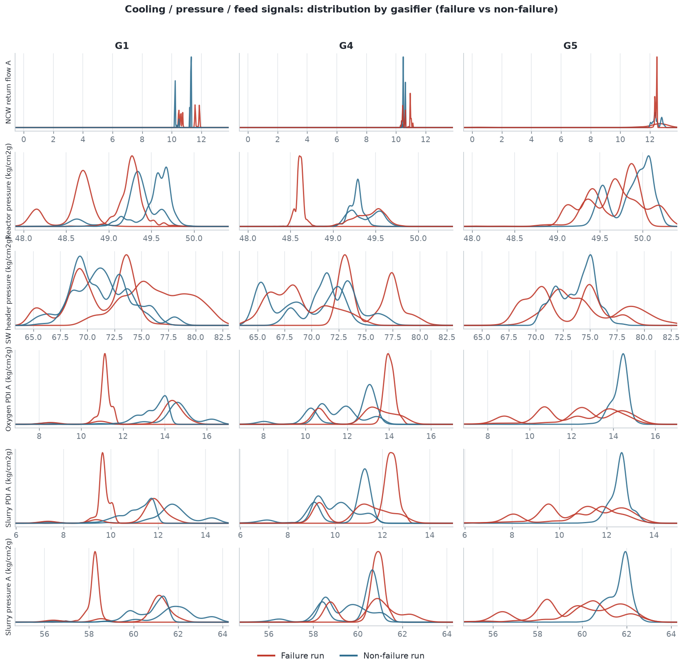
Figure 6.What this shows: The same view for cooling, pressure and feed signals (flows, reactor and header pressures, nozzle pressure drops). Same result — jumbled, no consistent red-vs-blue separation anywhere.
Finding 5 — nothing drifts toward the end of a run either
If damage built up gradually, a sensor might creep in one direction as a failed run nears its end. We lined every run up on a common 0-to-1 timeline (0 = start, 1 = shutdown) and tracked the key signals across the whole life of the run.
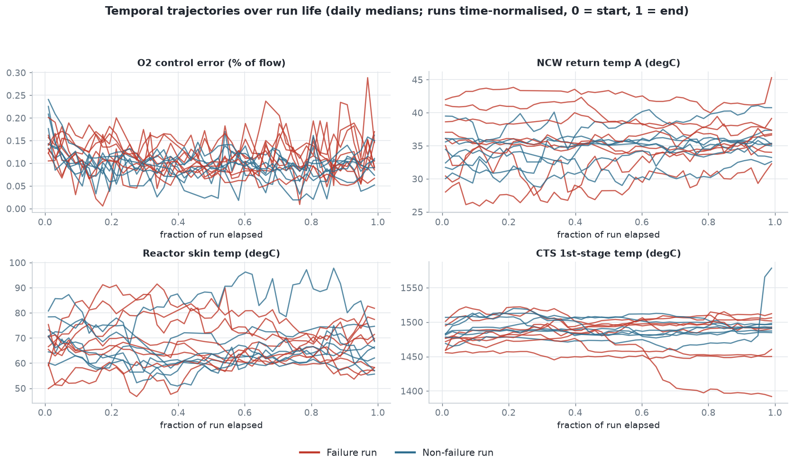
Figure 7.What this shows: Each line is one run over its life. The failed (red) and healthy (blue) lines stay tangled together from start to finish — no build-up, no end-of-run drift that marks the failures. (The lone red line dropping at the far right is a single sensor glitch, not a trend.)
5 — The honesty checks
A predictor trained on the data is no better than a coin toss
The decisive test: train a model on some gasifiers, then ask it to predict failure on a gasifier it has never seen. If a real, general warning sign existed, the model would catch it.
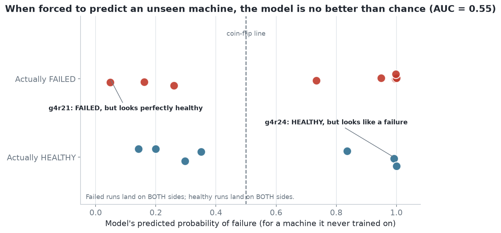
Figure 8.What this shows: Failed and healthy runs land on both sides of the 50/50 line. The model scores 0.55 — essentially a coin flip. Two runs make the point: g4r21 failed but looks completely healthy; g4r24 ran healthy but looks like a failure.
Our “best clue” is what random chance produces anyway
When you test 147 measurements on only 15 runs, some will look good by pure luck. To measure that luck, we shuffled the failed/healthy labels at random 1,500 times and asked how good a clue chance normally throws up.
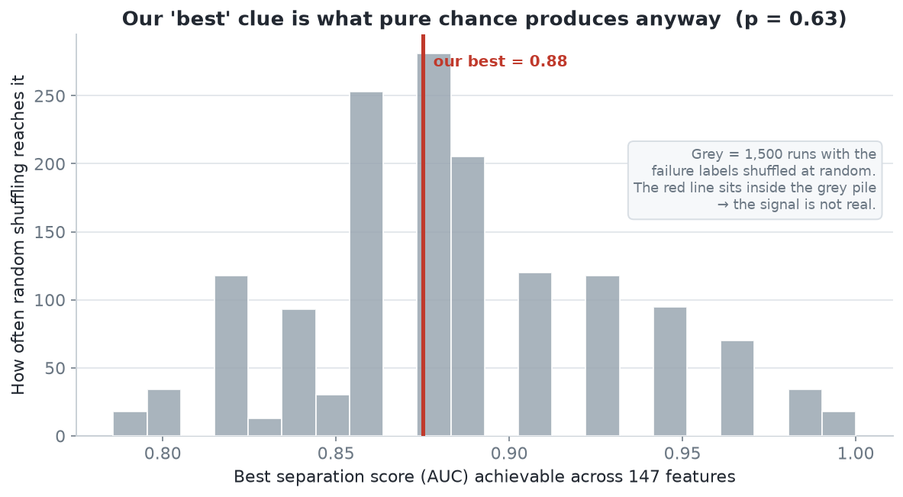
Figure 9.What this shows: The grey pile is what random luck achieves. Our real best result (red line) sits right in the middle of it — a clue this strong appears about two-thirds of the time even when there is nothing there.
The run that breaks every theory
g4r21 is a genuine failure, yet it was the coolest, steadiest, most unremarkable run we have — and only 31 days long. If a run can look perfectly normal and still fail, then "normal-looking" cannot be used to predict a failure. This matches the equipment note that dislodgement happens "even after short runs."
6 — Every candidate, side by side
The full ranking of leading signals
For completeness, here is how all the leading measurements scored on their own — with the reminder that none survive the two honesty checks above.
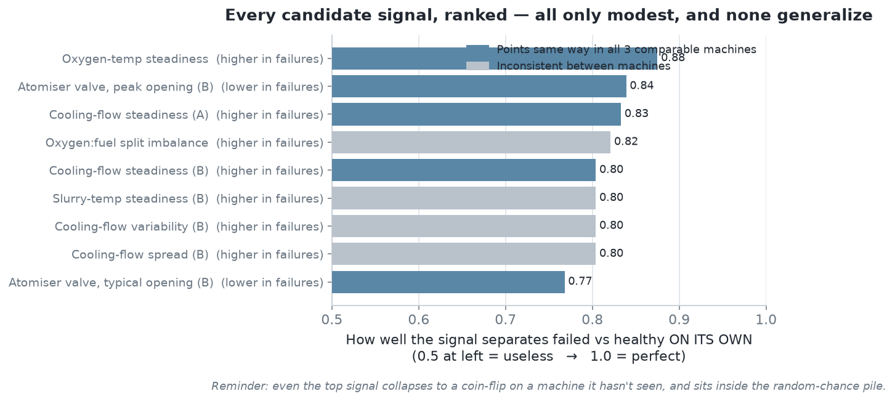
Figure 10.What this shows: Every candidate is only modest on its own (nothing near a perfect 1.0), the direction is inconsistent between machines for many of them (grey bars), and even the top one is really just noise.
7 — One real oddity worth an engineer’s eye
A single run with a dramatic cooling imbalance
One failed run, g5r21, really did behave strangely: one half of its mixer ran 8–12 °C hotter than the other for the entire campaign. That is a genuine physical red flag — but it is a one-run story, not a rule.
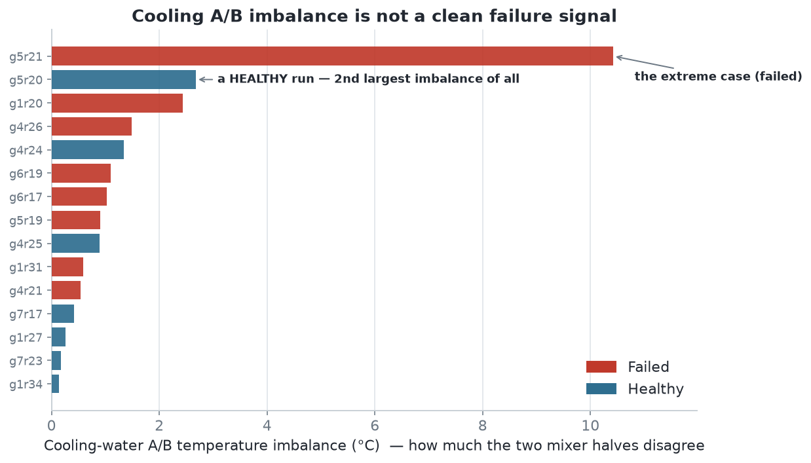
Figure 11.What this shows: The A/B imbalance for every run. g5r21 (failed) is extreme — but the second-largest imbalance is a healthy run (g5r20), and below the top the colours are mixed. Imbalance alone does not mark a failure.
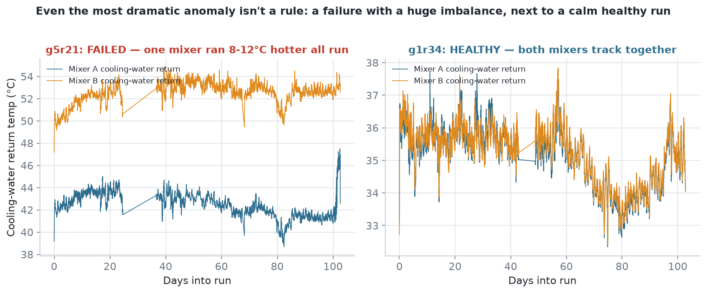
Figure 12.What this shows: Left — the failed run g5r21, where mixer B (orange) sits far above mixer A (blue) all run. Right — a healthy run where both halves track together. Worth investigating on that specific unit; it does not generalise into a fleet-wide warning sign.
8 — Why the data can’t pinpoint the cause
This is a limit of what was measured, not of the analysis
A big reason a "signal" is so hard to trust: each machine has its own baseline, and that baseline is far larger than any failed-vs-healthy difference.
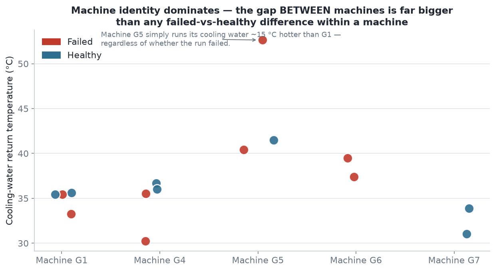
Figure 13.What this shows: The same measurement, split by machine. The machines sit at clearly different levels (G5 runs its cooling water much hotter than G1), while within each machine the failed and healthy runs barely differ. Any "signal" is easily just a machine’s personality — which is exactly why the predictor failed on an unseen machine.
The sensors are in the wrong place. They measure conditions near the tip, but nothing measures the actual metal that cracks. It is like diagnosing a toothache with a thermometer.
A failed run can look identical to a healthy one (g4r21). That points to a physical trigger — how the ceramic was fitted, the metal quality, or a start-up jolt — that these process sensors never see.
Very few examples. 15 runs, and only 3 machines that both failed and ran clean. With so little to compare, even a real effect can’t be proven.
Steady running dominates. Over 90% of every campaign is calm, steady combustion. If the damage is done during trips and start-ups, minute-by-minute steady data barely captures it.
9 — Conclusion & recommendation
The honest answer, and what would change it
With the sensors we have, we cannot pinpoint a reliable cause of mixer failure, and we can prove it: failed and healthy runs overlap on every measurement, the best clue is no better than random chance, and a trained model predicting an unseen machine performs at coin-flip level.
The one direction the data faintly leans — failed runs run slightly less steadily — is a hypothesis worth watching, not a warning sign to act on today.
What would actually let us catch it
Action
Why it would help
Put a sensor on the tip itself
A temperature or strain gauge on the metal that cracks — the one reading we are missing entirely.
Log every rebuild
Record how each ceramic shield is fitted and the metal batch used. The g4r21 clue points straight here.
Capture the jolts
High-speed data around every start-up, shutdown and trip — the violent moments steady sensors miss.
Grow the record
More matched failed/healthy runs per machine. More paired examples is the only way a true pattern can surface.
In one line
The data we have doesn’t reveal why the mixer breaks — because a broken tip can look exactly like a healthy one — and to find the real cause we need to measure the tip, the rebuilds, and the start-up shocks, not just the steady process readings.